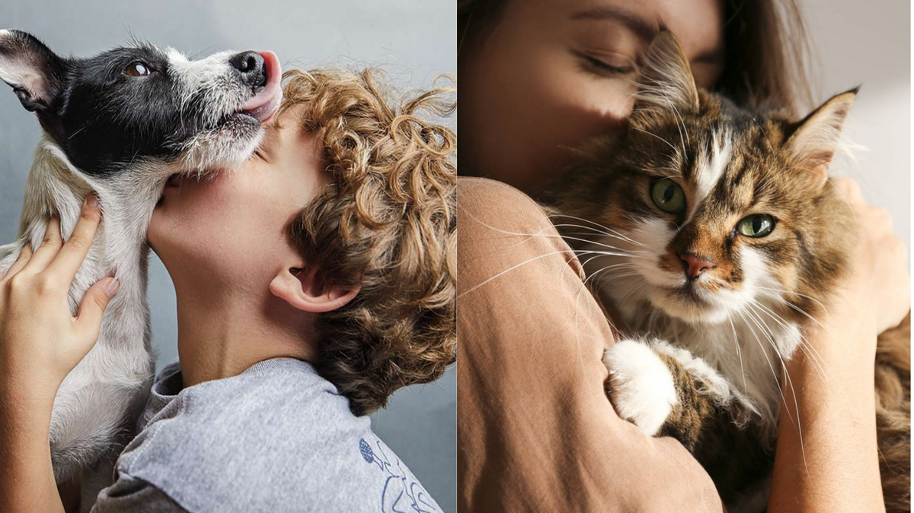

¡Bienvenidos a "ONG - Ayuda a un Peludo"! Somos una organización comprometida con la protección y el bienestar de nuestros amigos de cuatro patas. Desde nuestro inicio, nos hemos dedicado a brindar amor, cuidado y atención a los animales más necesitados de nuestra comunidad. Nuestra misión es simple pero poderosa: salvar vidas y fomentar el amor y el respeto hacia los animales. Trabajamos incansablemente para rescatar a perros y gatos abandonados, proporcionarles atención veterinaria, y buscarles hogares amorosos donde puedan recibir el cariño que merecen. En "ONG - Ayuda a un Peludo", creemos en la importancia de la colaboración y la comunidad. Trabajamos de la mano con voluntarios dedicados, donantes generosos y otras organizaciones afines para maximizar nuestro impacto y ayudar a tantos animales como sea posible. Cada vida que salvamos nos llena de alegría y nos motiva a seguir adelante en nuestra labor. Con tu apoyo, podemos hacer una diferencia tangible en la vida de estos seres indefensos. ¡Únete a nosotros en nuestra misión de hacer del mundo un lugar mejor para nuestros amigos peludos! juntos podemos marcar la diferencia.
